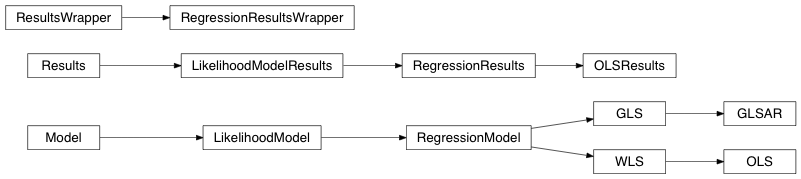

Internal Classes¶
The following summarizes classes and functions that are not intended to be directly used, but of interest only for internal use or for a developer who wants to extend on existing model classes.
Module Reference¶
Model and Results Classes¶
These are the base classes for both the estimation models and the results. They are not directly useful, but layout the structure of the subclasses and define some common methods.
Model(endog[, exog]) |
A (predictive) statistical model. |
LikelihoodModel(endog[, exog]) |
Likelihood model is a subclass of Model. |
GenericLikelihoodModel(endog[, exog, ...]) |
Allows the fitting of any likelihood function via maximum likelihood. |
Results(model, params, **kwd) |
Class to contain model results |
LikelihoodModelResults(model, params[, ...]) |
Class to contain results from likelihood models |
ResultMixin |
|
GenericLikelihoodModelResults(model, mlefit) |
A results class for the discrete dependent variable models. |
ContrastResults([t, F, sd, effect, ...]) |
Class for results of tests of linear restrictions on coefficients in a model. |
Linear Model¶

Generalized Linear Model¶
Discrete Model¶

Robust Model¶
Vector Autoregressive Model¶